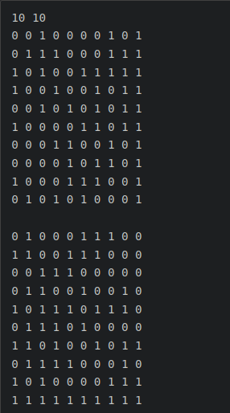
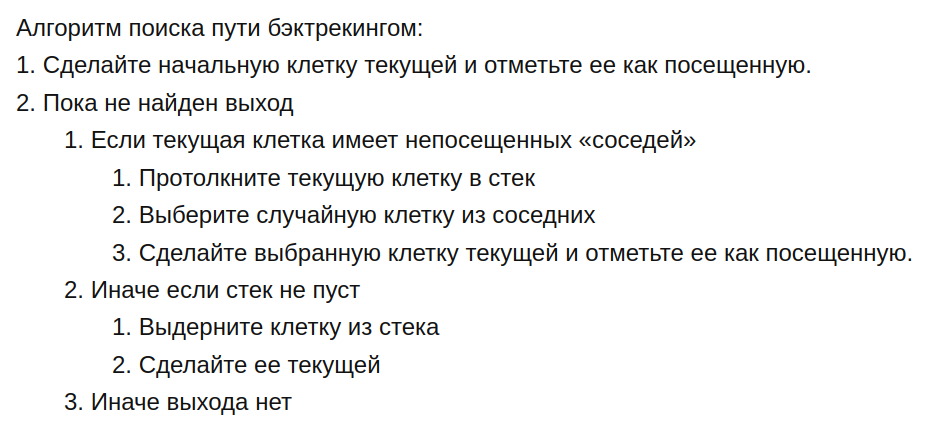
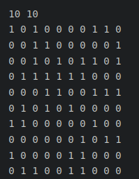

A1_MAZE-0
Часть 1. Лабиринт
Данная программа позволяет загружать свой лабиринт, генерировать его, а также находить путь между двумя точками
1. Загрузка
Для загрузки файла необходимо нажать на кнопку "Загрузить лабиринт". Далее в диалоговом окне нужно указать путь до нужного файла (формат .txt). Сам файл должен иметь слудцщий формат:
размерность, матрица правых границ, матрица нижних границ. Пример:

Если файл не будет соответствовать этому формату, программа выдаст ошибку.
2. Генерация
Для генерации идельного (без петель и изолированных областей) лабиринта необходимо сначала указать его размеры (максимум 50 на 50), а затем нажать на кнопку "Сгенерировать". Алготим:
- Создайте первую строку. Ни одна ячейка не будет являться частью ни одного множества.
- Присвойте ячейкам, не входящим в множество, свое уникальное множество.
- Создайте правые границы, двигаясь слева направо:
- Случайно решите добавлять границу или нет
- Если текущая ячейка и ячейка справа принадлежат одному множеству, то создайте границу между ними (для предотвращения зацикливаний)
- Если вы решили не добавлять границу, то объедините два множества в которых находится текущая ячейка и ячейка справа.
- Создайте границы снизу, двигаясь слева направо:
- Случайно решите добавлять границу или нет. Убедитесь что каждое множество имеет хотя бы одну ячейку без нижней границы (для предотвращения изолирования областей)
- Если ячейка в своем множестве одна, то не создавайте границу снизу
- Если ячейка одна в своем множестве без нижней границы, то не создавайте нижнюю границу
- Решите, будете ли вы дальше добавлять строки или хотите закончить лабиринт
- Если вы хотите добавить еще одну строку, то:
- Выведите текущую строку
- Удалите все правые границы
- Удалите ячейки с нижней границей из их множества
- Удалите все нижние границы
- Продолжайте с шага 2
- Если вы решите закончить лабиринт, то:
- Добавьте нижнюю границу к каждой ячейке
- Двигаясь слева направо:
- Если текущая ячейка и ячейка справа члены разных множеств, то:
- Удалите правую границу
- Объедините множества текущей ячейки и ячейки справа
- Выведите завершающую строку
3. Поиск пути
Для того, что бы найти путь между двумя точками, необходимо укзать координаты двух этих точек. И после этого нажать на кнопку "Найти путь". Алготим поиска:

Пример:
Часть 2. Пещеры
Данная программа также может генерировать пещеры с помощью клеточного автомата. Для этого необходимо перейти во вкладку "Cave"
1. Загрузка
Загрузка осуществляется аналогично лабиринту. Нажимаем на кнопку загрузить пещеру, выбираем путь к файлу (формат - txt). Если файл не будет соответствовать нужному формату, программа выдаст ошибку. Пример формата:

2. Генерация
Для генерации пещеры нужно нажить на кнопку "Сгенерировать", предварительно указав размер пещеры и пределы рождения и смерти. Алгоритм генерации: есть две специальные переменные, одна для "рождения" "мертвых" клеток (предел "рождения") и одна для уничтожения "живых" клеток (предел "смерти").
Если "живые" клетки окружены "живыми" клетками, количество которых меньше, чем предел "смерти", они "умирают".
Аналогично если "мертвые" клетки находятся рядом с "живыми", количество которых больше, чем предел "рождения", они становятся "живыми"
Пример: